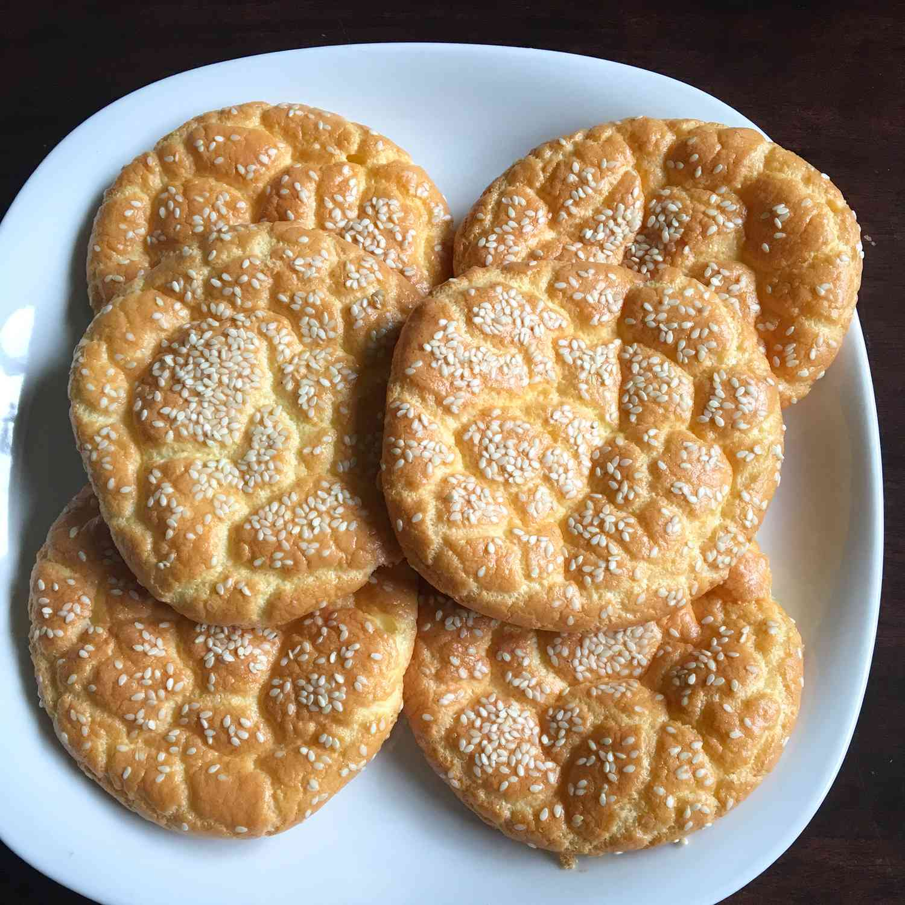

Protein Fluff

Description
Ingredients
- 3 large eggs, separated
- 1/4 teaspoon cream of tartar
- 2 ounces cream cheese, very soft
- 1 tablespoon white sugar
Steps
-
Preheat oven to 350 degrees F (175 degrees C). Line a baking sheet with parchment paper.
-
Beat egg whites and cream of tartar together in a bowl until stiff peaks form.
-
Mix egg yolks, cream cheese, and sugar together in a separate bowl using a wooden spoon and then mixing with a hand-held egg beater until mixture is very smooth and has no visible cream cheese. Gently fold egg whites into cream cheese mixture, taking care not to deflate the egg whites.
-
Carefully scoop mixture onto the prepared baking sheet, forming 5 to 6 "buns".
-
Bake in the preheated oven until cloud bread is lightly browned, about 30 minutes.